在20世纪众多极权统治的悲剧中，柬埔寨的红色高棉政权无疑是最血腥、最极端的之一。这个由共产主义意识形态武装起来的政权，在短短四年统治中，试图构建一个彻底“纯净”的农业乌托邦，却以暴力、饥饿和屠杀将整个国家推入地狱。
1975年到1979年，红色高棉掌控下的柬埔寨彻底废除市场、货币和私有制，摧毁城市，强制迁徙全国人民至农村公社，全面消灭知识分子、宗教、少数民族以及所有被视为“敌人”的人群。约150万至300万人死于饥饿、过劳、酷刑与处决——占全国总人口的四分之一。
本文将以简明清晰的方式，梳理红色高棉的兴起、统治与灭亡，从它如何成为“最纯粹的共产主义极权实验”，到这个实验如何迅速演变成灾难，成为20世纪历史最黑暗的一章之一。
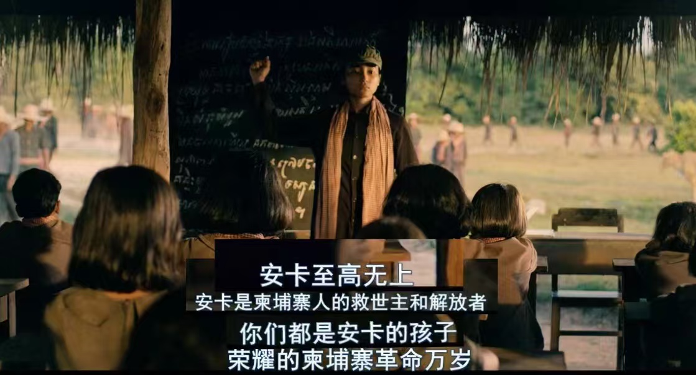

一、革命的起点：从地下党到执政
红色高棉（高棉语：ខ្មែរក្រហម，罗马化：Khmer Kraham，高棉语发音：[kʰmae krɑ.ˈhɑːm]；法语：Khmer Rouge，法语发音：[kmɛʁ ʁuʒ]），又译作赤柬、赤色高棉，由诺罗敦·西哈努克于1950年代提出，最初是对柬埔寨左翼势力的统称，后用于指柬埔寨共产党及其后继者民主柬埔寨党等政党。
高棉人民革命党（即柬埔寨共产党的前身）于1952年成立。1962年被柬埔寨当局查明其受外国势力领导而解散，此后转入地下活动。在其他"志同道合“的外国势力支持下，该组织逐步发展武装力量。
1970年，朗诺发动政变建立柬埔寨共和国。在这之后红色高棉势力迅速扩大。波尔布特领导的红色高棉1975年推翻当局政权，与西哈努克合作组建“柬埔寨王国民族团结政府”，但实权由红色高棉掌握。
1976年，西哈努克被软禁，红色高棉将国名改为“民主柬埔寨”。
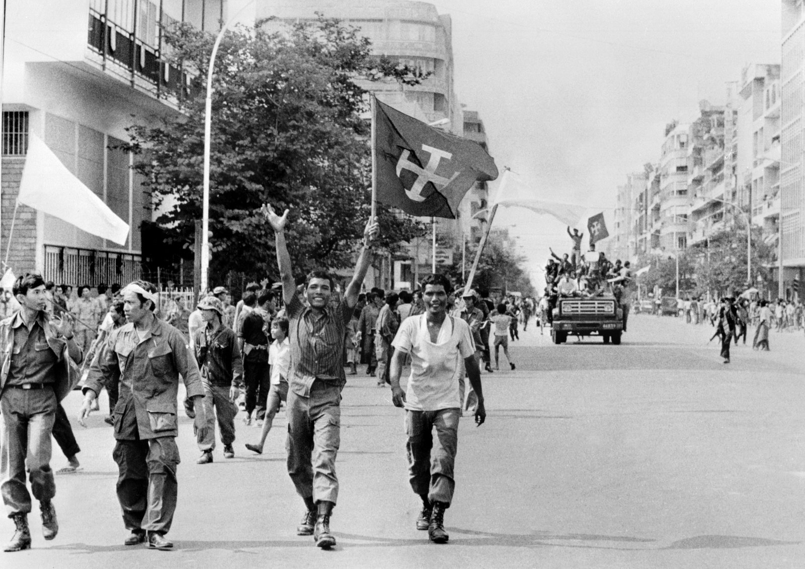
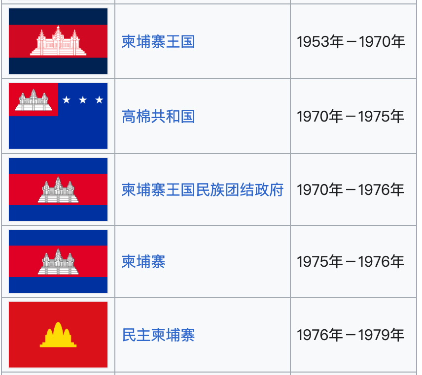
二、极端政策：从理想到灾难
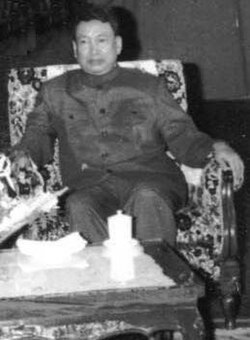
红色高棉在柬埔寨推行农业社会主义，其核心政策是废除私有制、推行农业集体化，大规模人口迁移，激进的农业增产计划，废除货币与市场经济，消灭知识分子与“敌对分子”，极端自给自足政策。
1. 废除私有制与农业集体化
私人财产被废除，土地、工具和牲畜全部归国家所有，建立人民公社，农民被迫在酷热的环境下超负荷劳动，每日劳动12-16小时以上，农具和耕畜是少见和宝贵的，弄坏一把锄头或一头水牛跌伤了一条腿，都会使当事人成为不可辩解的“反革命罪”，将会受到鞭打或处决。粮食由公社统一分配，个人无权决定生产和消费。不论能力如何，每个人得到相同的口粮，食物由公社食堂统一管理，禁止私人烹饪，甚至被禁止私人种植或储存粮食。
他们设定了极端的农业生产，例如强制全国农民在短时间内达到每公顷3吨稻谷的产量，全年生产三季水稻，强制开垦荒地、将全国变成农业区等。
这些极端农业政策最终导致农业生产崩溃，全国范围内饥荒，因饥荒和营养不良直接或间接死亡的人数可能超过50万，甚至更高。
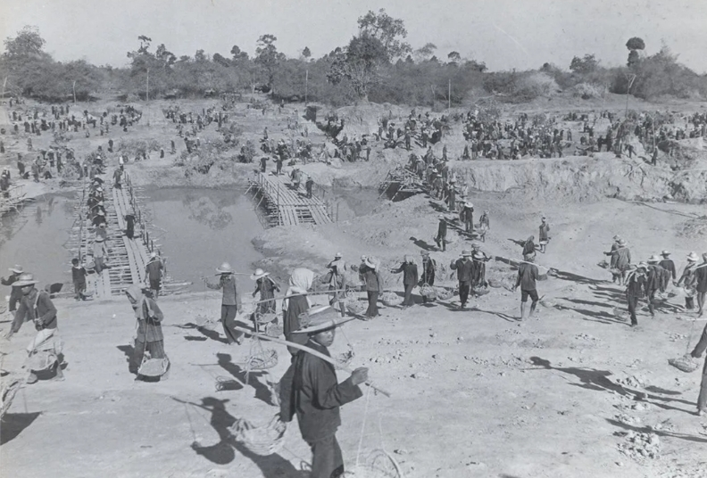
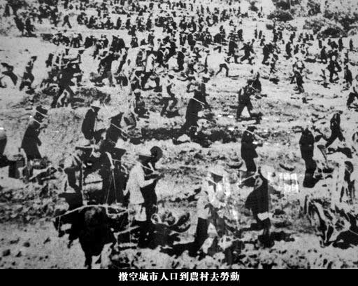
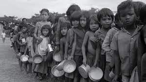
2. 大规模人口迁移
红色高棉视城市为“资本主义毒瘤”，在占领金边后，于短短几天内强制疏散数十万人至农村，声称是为了应对“美军轰炸”。由于缺乏任何准备，迁移过程中大量人因饥饿、疲劳、疾病死亡。尤其是大量的妇孺和年老体弱者
对于那些不服从强制迁移的人和各类异己分子（包括非高棉人和佛教徒等）进行了有计划的屠杀。仅在金边撤离初期，约有两万到十万人因直接屠杀或恶劣条件死亡，因拒绝迁移或试图返回城市而被杀害的人可能达数十万。
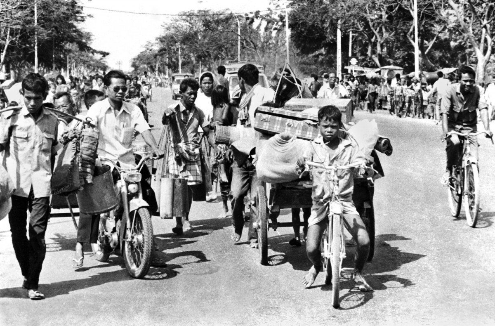
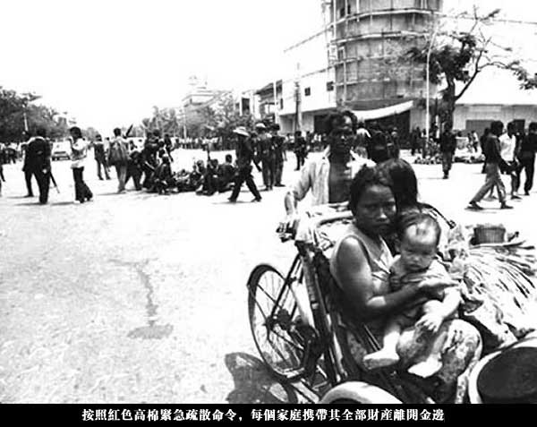
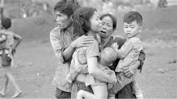
3. 废除货币与市场经济
红色高棉掌权后，立即废除货币、关闭银行、焚烧纸币，银行所有账户被清零，现金全部作废，甚至炸毁了中央银行；所有居民的现金、存款、黄金和珠宝被没收等等，使柬埔寨成为世界上唯一一个完全没有货币的国家。土地、农具、牲畜全部国有化，个人家庭的炊具也被没收，必须在公社食堂用餐，所有人不论职业、技能或贡献、一律没有工资，仅靠国家公社发放的口粮生活。
红色高棉的经济政策成为20世纪最极端、最失败的经济实验之一。
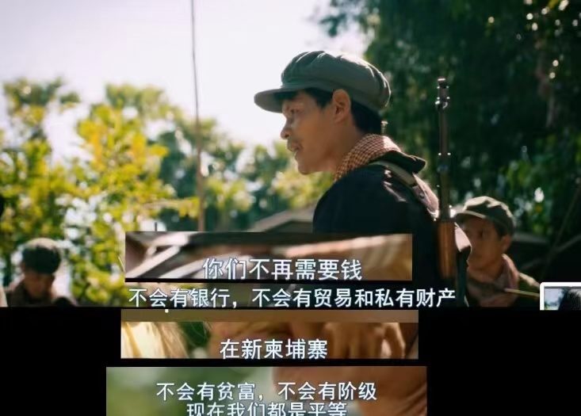
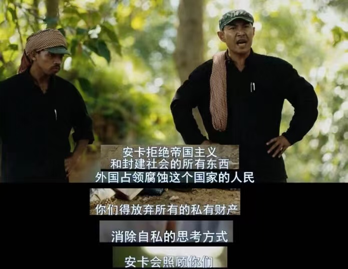
4. 极端自给自足政策
拒绝与外界贸易，认为柬埔寨完全可以依靠农业生产生存，不切实际的生产计划导致粮食供应不足，而红色高棉仍强制出口粮食换取武器，使得粮食极端短缺，许多地区每天仅分配一勺稀饭，人民被迫吃树皮、草根、昆虫充饥，甚至人吃人事件发生。
三、系统的灭绝政策
1. 消灭知识分子与宗教信仰
红色高棉认为城市居民、知识分子、僧侣、教师、医生都是“资产阶级敌人”，“越有知识、越反动”，数十万知识分子、政府官员、宗教人士和普通百姓被处决。
学校被关闭，教师和学生被流放到农村，许多被迫害；所有医生、工程师、律师等职业人士不允许继续从事原来的工作；曾在朗诺政府工作的公务员、警察、军官等几乎全部被处决；会英语、法语或其他外语的人被认为是“亲西方分子”，极易受到迫害；因眼镜被认为是知识分子的象征，许多戴眼镜的普通百姓也遭到杀害。
佛教僧侣被认为是封建迷信的象征，绝大多数被迫还俗或遭到杀害；基督徒和穆斯林被视为外国影响的代理人，教堂和清真寺被摧毁，信徒被迫改信共产主义；华人、越南人等少数民族被大规模屠杀或强迫劳动至死；
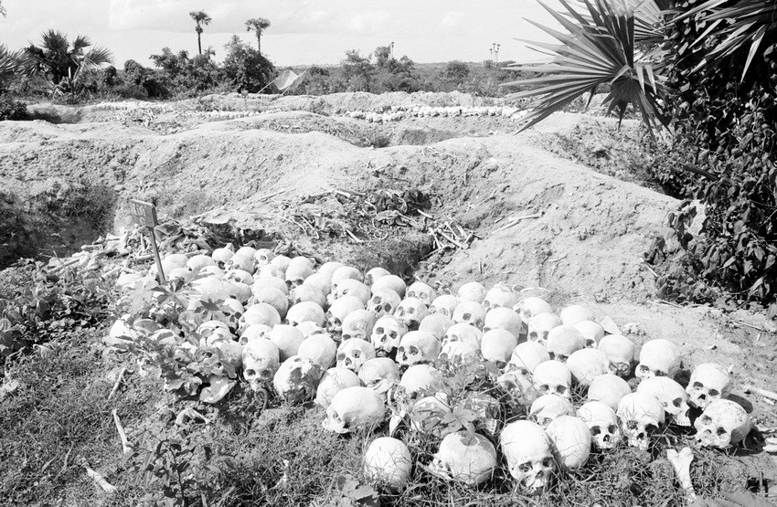
2. 党内清洗与恐怖统治
红色高棉对内部成员同样严厉，一旦怀疑不忠或不满即遭处决。许多红色高棉干部、军官和普通士兵在“肃清”中被杀。即使是农民若被怀疑偷粮或发怨言，也可能被处决。
3. S-21集中营：死亡工厂
S-21监狱原为“昭博涅亚中学”（Chao Ponhea Yat High School）。1975年，该学校被红色高棉改造成集中营和集体处决中心。在1975年至1979年间，S-21至少关押过14,000名囚犯，只有12个人带到此地审讯而免于被处死。前期的犯人是高棉共和国时期的政府官员、军人及学者、医生、教师、僧侣等，但后期的大屠杀犯人却主要是红色高棉政权的党员、士兵甚至一些高级官员。1979年初，在越南人民军迫近金边的前夕，S-21的负责人康克由奉命处决监狱中所有活着的犯人；但仍有7名犯人幸免于难，被越南人民军解救。

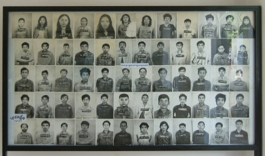
在S-21集中营的生活是极端血腥恐怖的。犯人到达集中营后，先要照像存档，之后要脱掉身上所有衣物进行全身检查，去除可能引起自杀的物品，然后他们被带往牢房。关押在较小牢房的犯人被铐在墙上，而关押在较大牢房的犯人则是所有人被铐在一根大长铁条上。犯人必须睡在冰冷的地面，没有被褥，连睡觉时也是被铐着的。
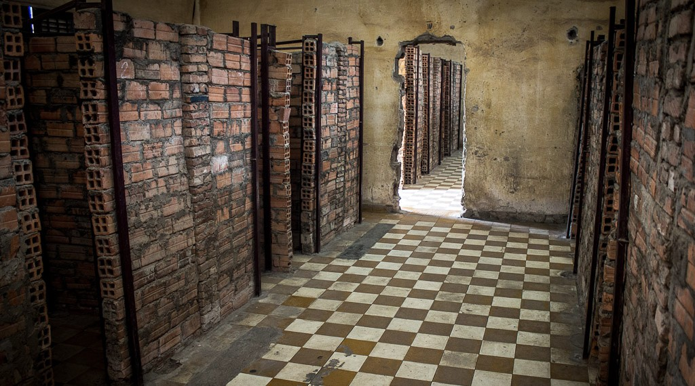
集中营的纪律非常严格，犯人稍有违反就会遭到毒打，犯人的每个行动都必须得到守卫的批准。在集中营中，犯人的健康也无法得到保障，他们极易感染皮肤病、虱或其他疾病。犯人基本不会得到任何治疗，因为集中营的医生并不会为病人治病，他们的任务是让犯人能够继续接受审问。
审问过程中犯人会遭到殴打、电击、热烙或悬吊等各种各样的酷刑折磨，某些犯人会被刀子砍伤或是用塑料袋闷住头部，或是指甲被拔掉后在伤口上倒酒精、将头压入水中以及坐水凳等等。而女性犯人有时则会遭到审问者的强奸
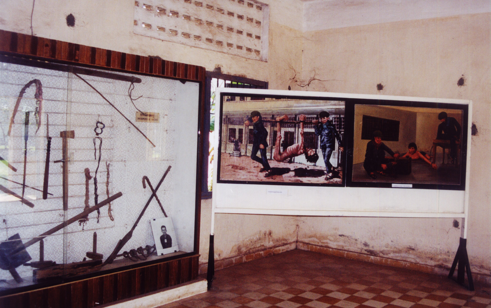
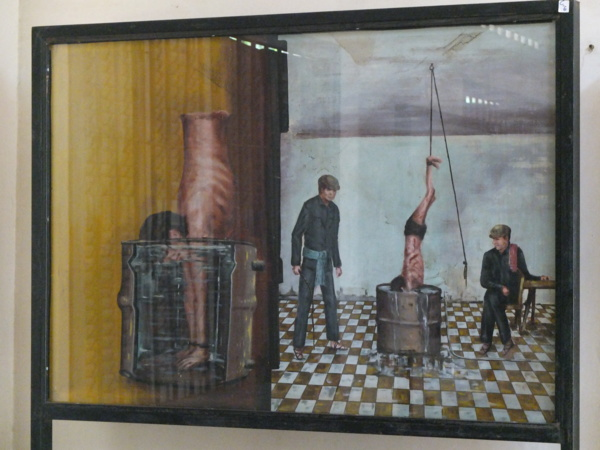
在审问中。犯人首先要供认自己的罪行，不管是否真的做过。最后犯人会被强迫供认出一份名单，用来指认同样具有叛国行为的朋友、同事或是熟人。而名单上的人又会被继续抓来，以此类推。
监狱的走廊都安装上了铁丝网，窗户也被封死，以防止自杀自杀。自杀这种寻求速死解脱的行为，在这里是不被允许的。
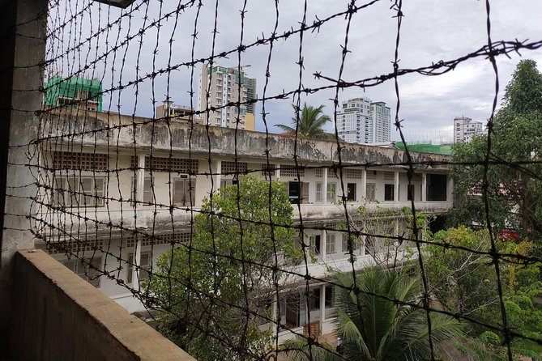
审问过后，犯人及他们的家属会被带往琼邑克灭绝中心加以杀害。该中心位于金边市中心15公里远，在那里他们被红色高棉的士兵用棍棒、锄头、十字镐、圆锹、镰刀、弯刀等或其他农具残忍的杀害，此举是为了节约子弹。孩子通常被拉住双脚，头部撞到树上摔死。连同家人一起杀害是为了斩草除根。
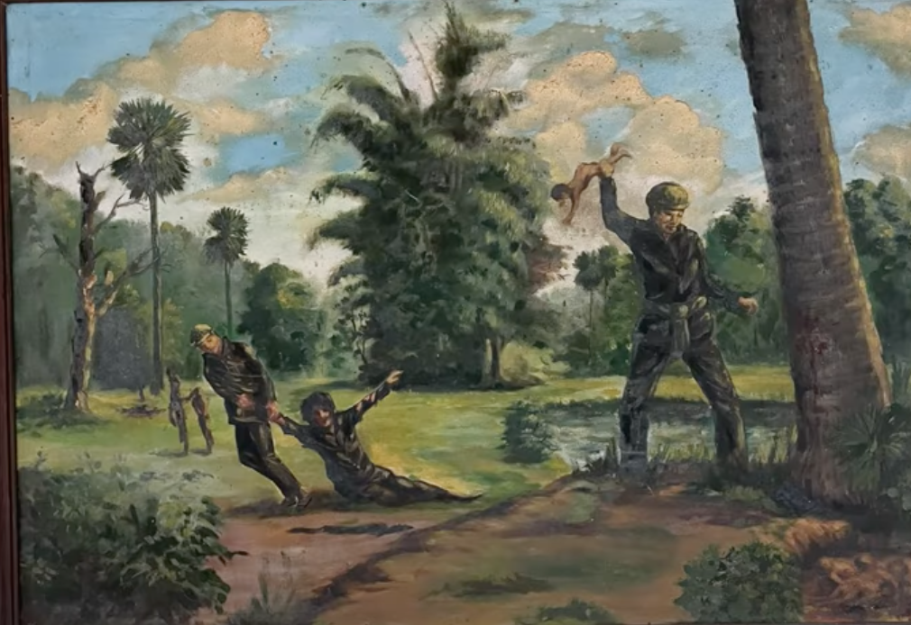
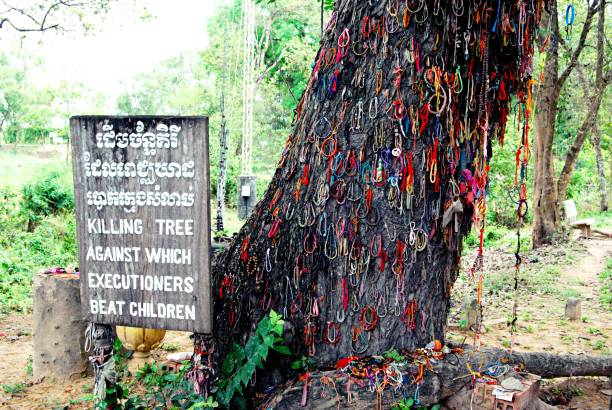
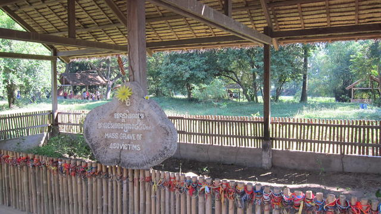
四、死亡人数与后果
据估计，红色高棉统治期间的死亡人数在150-300万左右。大约占当时人口的25%。起初认为被直接处决的人数大约占1/3-1/2，而其他人则因为生活环境，医疗环境差的原因，因为饥饿疾病等死去。但随着一些集体处决的万人坑在之后陆续被发现，2013年的学术研究表明，被直接处决的人可能占了60%左右。
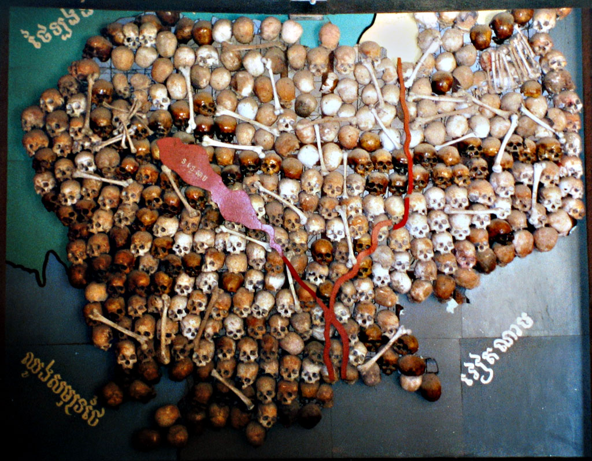
五、越南入侵与红色高棉败亡
因为红色高棉不断侵扰越南，甚至跨境发起了巴祝大屠杀，造成约3157越南平民遇害。越南当局于1978年底决定出兵柬埔寨，此举引发了越南和柬埔寨的战争以及中国和越南在边境地区的冲突。越南1979年攻占金边，建立柬埔寨人民共和国，并且收集公开了红色高棉的罪证。而波尔布特和他领导的红色高棉则退到山区和其他地区继续对抗越南和柬埔寨人民共和国。柬埔寨人民共和国被广泛认定为越南的卫星国。
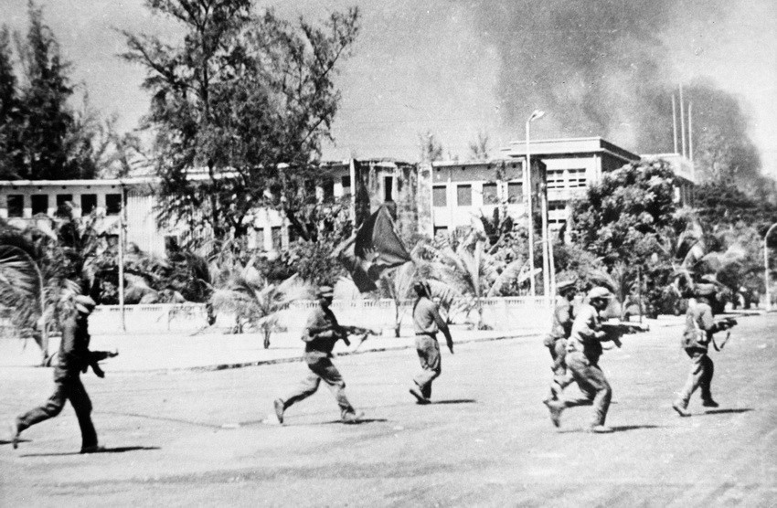
在当时的冷战背景下，为了平衡遏止当时在东南亚越南和苏联的势力，美国阵营和中国等支持红色高棉，而苏联阵营和越南则支持柬埔寨人民共和国。而泰国也支持红色高棉，泰国希望红色高棉作为一个抵挡越共渗透的缓冲角色。但在当时，民主柬埔寨（红色高棉政权）仍在联合国。1981年，红色高棉放弃共产主义，宣布柬共自动解散，以赢得国际上更多的支持。红色高棉变成了民主柬埔寨联合政府（CGDK)，并且继续持有联合国席位。
六、终结与审判
1. 越南撤军与柬埔寨的改革
1989年，由于国际形势的转变，加上苏联经济形势的恶化，越南被迫从柬埔寨撤军。柬埔寨人民共和国更名为柬埔寨国，而且去除了很多共产主义的内容，进行了一系列的改革。但此时还是和民主柬埔寨联合政府处于交战状态。
2. 联合国介入与重建
1991年联合国介入，签署了《巴黎和平协议》，各方势力和平，放弃一党制的政治体制和马克思列宁主义，柬埔寨由联合国托管至1993年通过新宪法和选举。但红色高棉坚决抵制和不承认选举，继续选择战争。
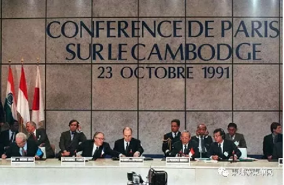
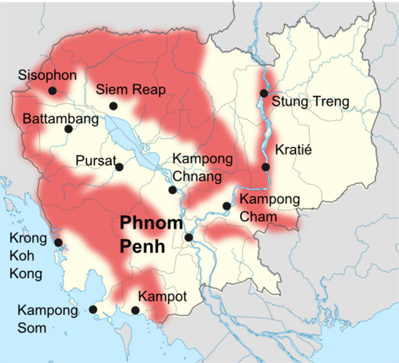
1993年，柬埔寨获联合国援助，举行全国大选，诺罗敦·拉那烈领导的亲王室的奉辛比克党赢得45.5%的选票成为第一大党，洪森领导的人民党居第二。经洪森威胁，两党组织大联合政府。1993年9月24日，柬埔寨制宪议会通过新宪法，恢复君主制及国名柬埔寨王国，三度回国的西哈努克重新登基为国王。
此后曾支持过红色高棉的中国、美国、泰国等国家停止了对红色高棉的支持和援助，红色高棉也在1993年失去了在联合国的席位。
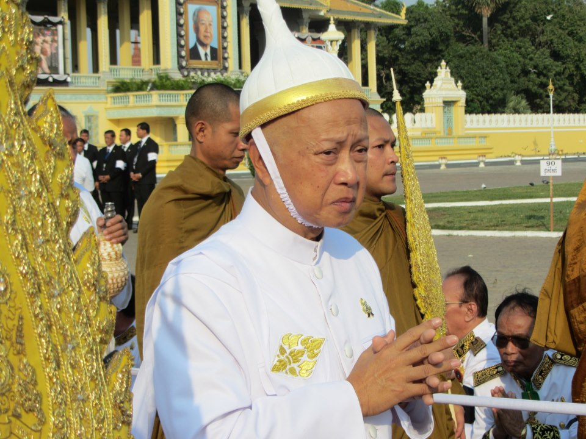
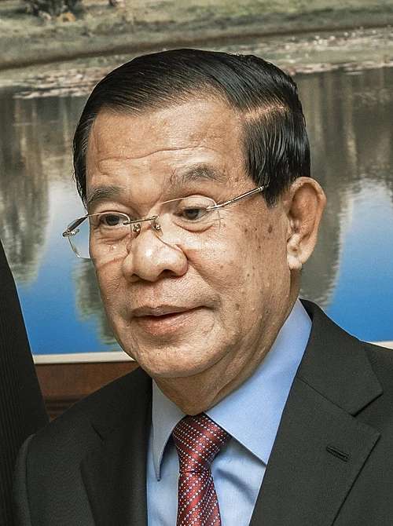
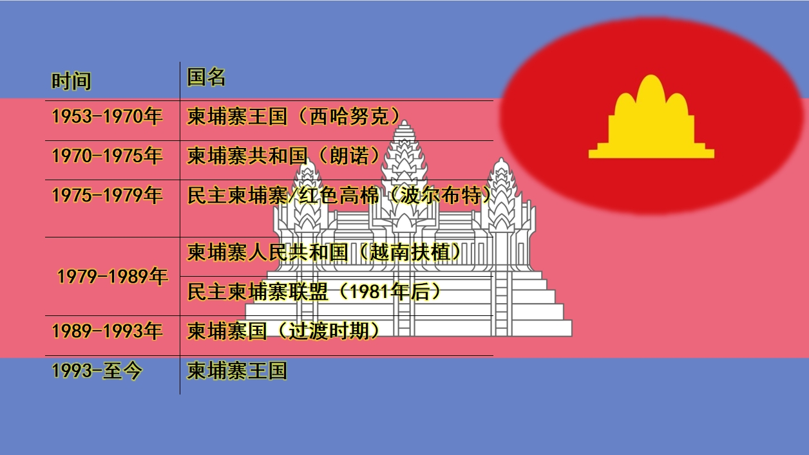
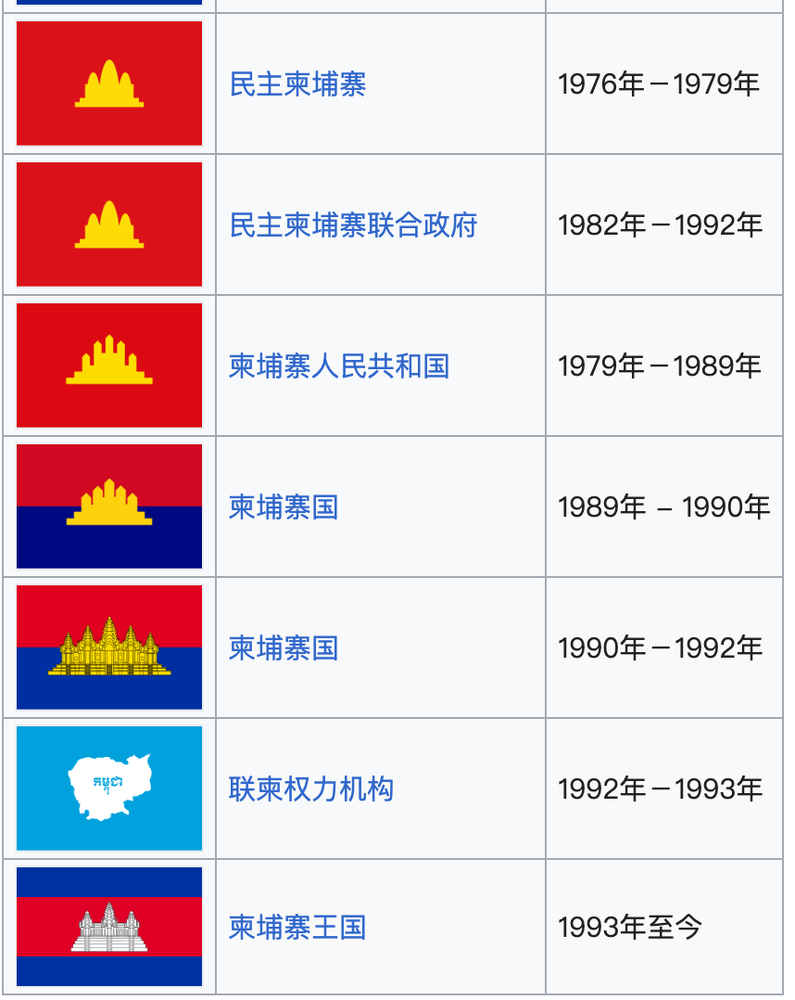
3. 红色高棉的瓦解
1994年7月7日，柬埔寨王国国会宣布红色高棉为非法组织。柬埔寨政府试图用和平谈判的方式让红色高棉放下武器，西哈努克开出了给予投诚的红色高棉领导人特赦的条件。截止1996年，陆续有红色高棉的士兵放下武器向柬埔寨政府投降。到1997年5月，红色高棉已丧失了近80%的作战部队。
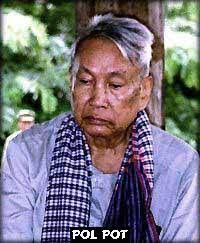
6月，民柬国民军总司令宋成密谋投诚，波尔布特得知后派人枪杀宋成夫妇及其8个子女，并用卡车碾压尸体。引起众怒，波尔布特随后被塔莫抓获，公审后被判处终身监禁。1997年10月8日，美国政府将红色高棉认定为恐怖组织。1998年4月15日，波尔布特在软禁期间、被移交给国际审判的前夕突然死亡，塔莫克宣布他死于心脏病；另有人怀疑是自杀或谋杀。同年12月25日，乔森潘和农谢在拜林宣布向金边政府投降。1999年3月6日，红色高棉四号人物塔莫于泰柬边境附近被柬埔寨军方擒获，最终导致红色高棉在1999年12月解散。1999年10月8日，因红色高棉势力已经基本灭亡，被美国国务院从恐怖组织名单上除名。
4. 法律审判与历史正义
2003年，联合国和柬埔寨政府成立了特别法庭对红色高棉有限的领导人进行审判。
该法庭审判并判处三名红色高棉高级领导人有罪，他们是金边吐斯廉监狱监狱长康克由（杜赫）、首席理论家农谢（二号兄弟）和国家元首乔森潘。波尔布特，在审判开始前就去世了。红色高棉外交部长英萨利接受审判但在判决前去世。尽管只有少数红色高棉领导人受到审判，但超过35万柬埔寨人亲自出席了审判，并且透过广播和电视得到了广泛的宣传。
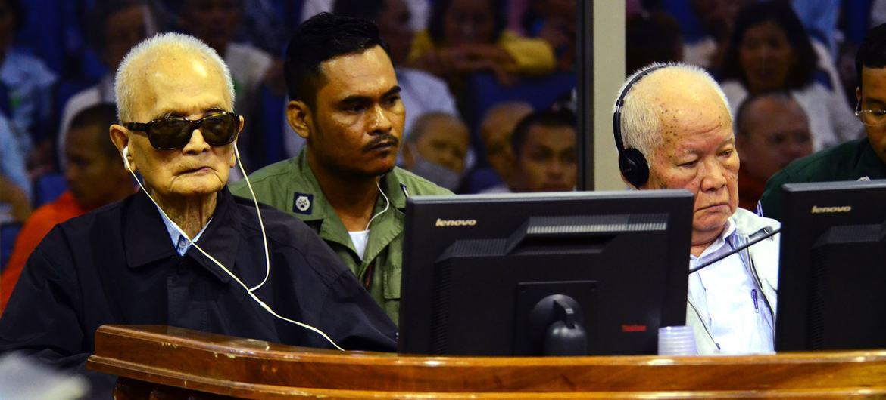
2010年7月26日，特别法庭以战争罪、反人类罪、酷刑和谋杀罪判处红色高棉统治柬埔寨期间S-21集中营的监狱长康克由35年监禁；2012年2月3日，特别法庭驳回其上诉，改判为无期徒刑。2014年8月7日，柬共原副书记农谢和国家主席团原主席乔森潘因为反人类罪，被判处终身监禁；2018年11月16日，农谢及乔森潘再被依种族灭绝罪被判无期徒刑。
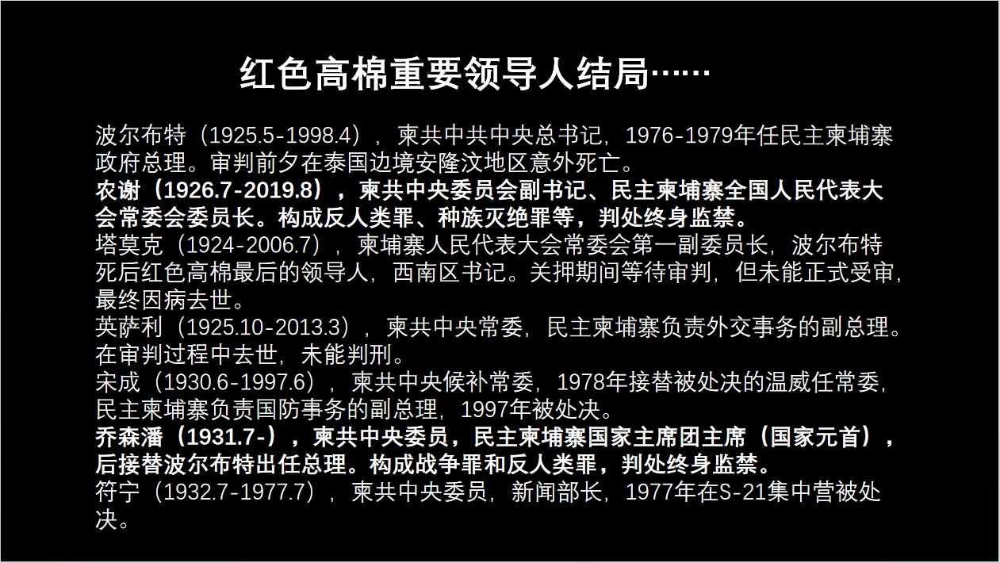
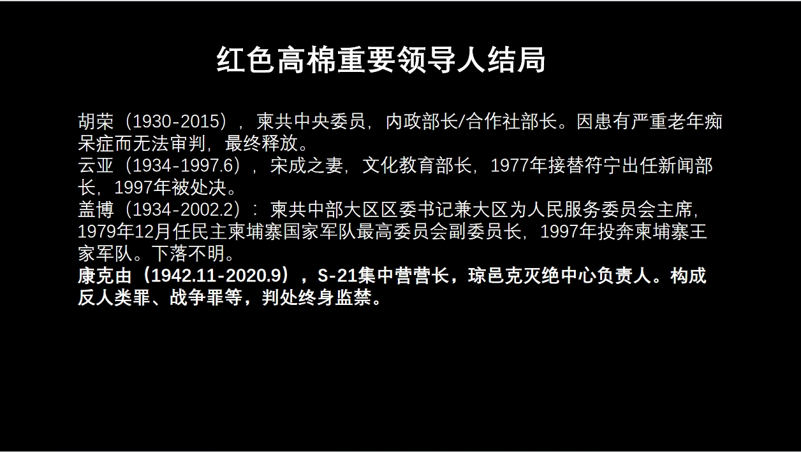
七、结语
上个世纪，一些运动风靡一时。无论他们的口号多么理想、宏大，但历史的结果已经给出了我们准确的答案。
在此想引用一个笑话和两个名人名言，来结束本文。
话说勃烈日涅夫当上苏共中央总书记之后，将在乡下的老母亲接到了莫斯科。老母亲甚至经历过沙俄时代，已经很老了，所以也有点神智不清了。老太太来了以后，勃列日涅夫得意洋洋地向老妈展示了一番自己的豪华别墅、高级汽车、名贵家具等等，展示完了后，勃列日涅夫问老太太这一切如何？老太太说:“儿子啊，这一切都很好，但是我又很担心，你这么有钱，共产党来了你怎么办？”
“他们相信天堂是有的，可以实现的，但在现世界与那天堂的中间隔着一座海，一座血污海。人类泅得过这血海，才能登彼岸，他们决定先实现那血海。”--徐志摩
"尝试创建人间天堂，最终只会创造出地狱！"--波普尔
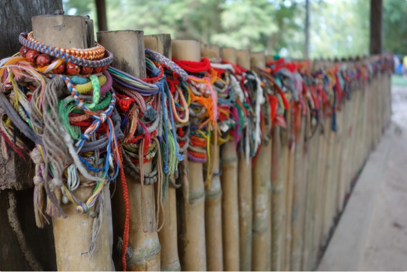